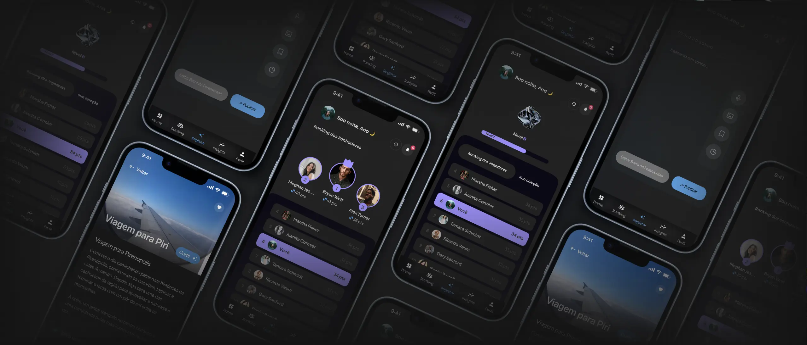
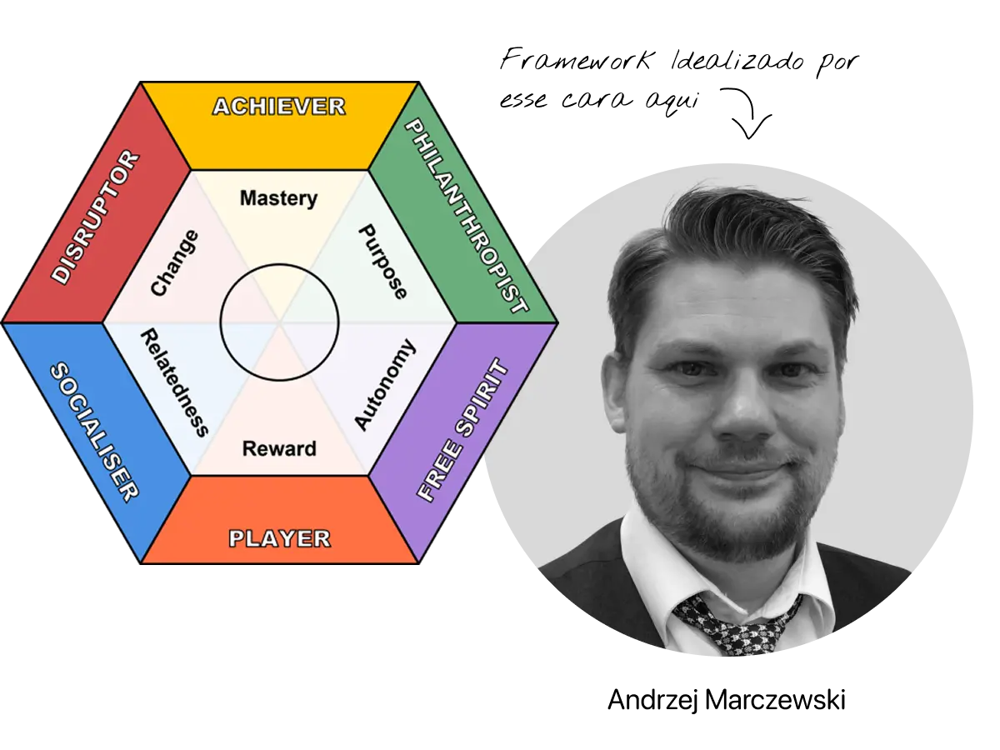
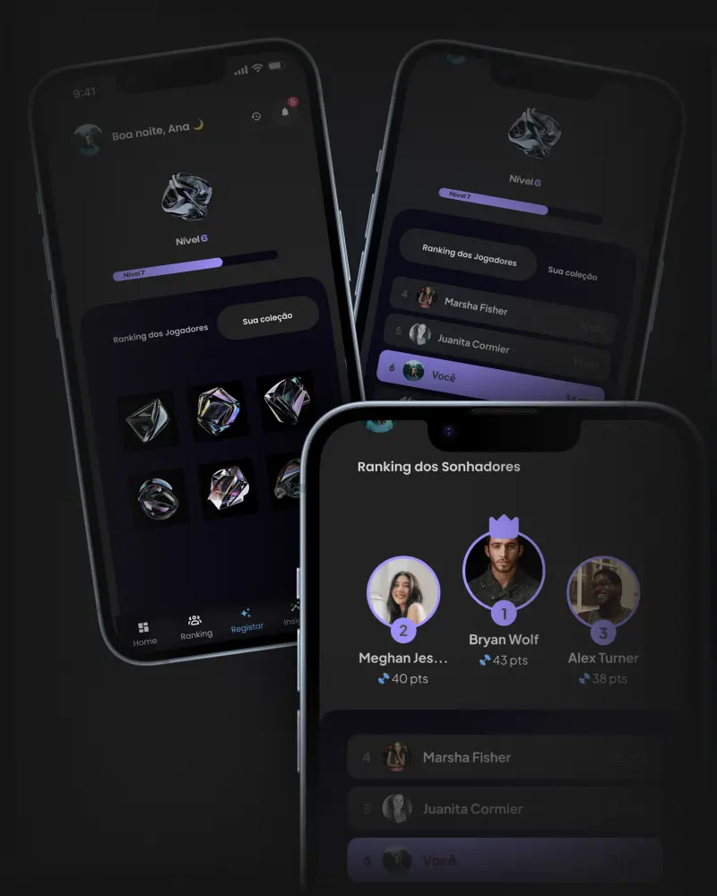
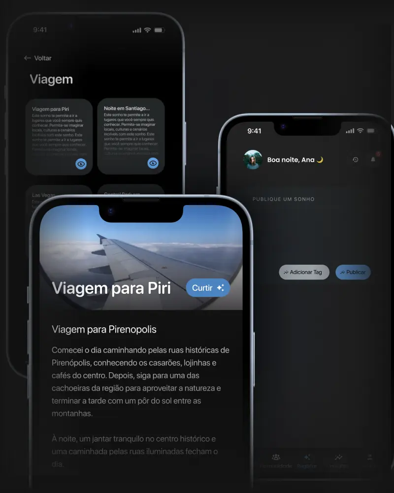
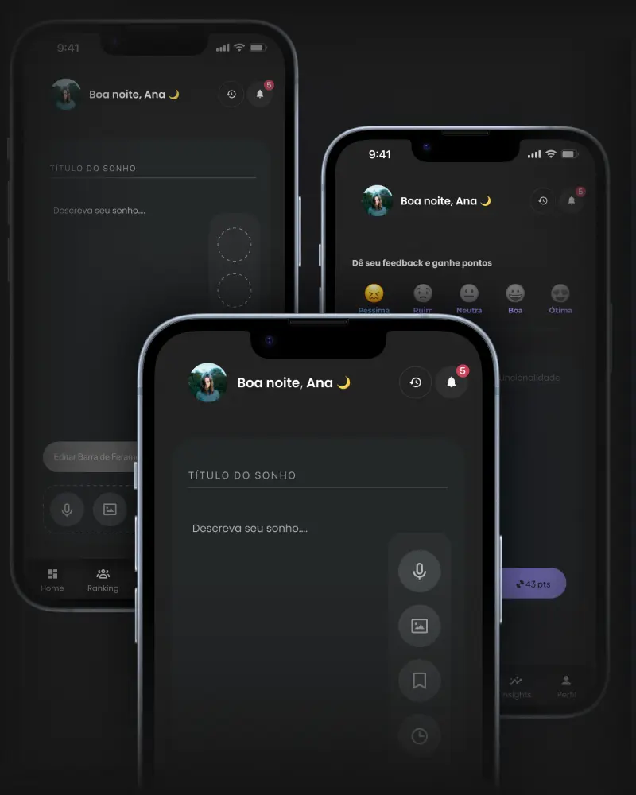

Dreambook
How I used the HEXAD framework to turn six motivation profiles into real gamification strategies, from user classification to interface components.
Context & approach
At Dreambook, a research project by CEIA (Center of Excellence in Artificial Intelligence), I worked on personalized gamification strategies to increase engagement with lucid dream journaling. The challenge was to avoid a one-size-fits-all experience, since different user profiles respond to different triggers. To address this, we used HEXAD, by Andrzej Marczewski, a framework that classifies users into six archetypes based on their motivations. Profiles were identified through an onboarding questionnaire, and the gamification experience was then adapted to the dominant archetype.
Together with Product Designer Julia Gomes, I was responsible for three of the framework's six archetypes.

From classification to interface
For each of my three profiles, the work followed the same structure, always starting from user behavior, never from the game mechanic itself:
Understanding motivation
What engages this profile, and just as important, what pushes it away or feels artificial to it.
Selecting the right mechanics
Not every gamification mechanic works for every profile. Picking the wrong one under-engages, or engages in the wrong way.
Translating into interaction concepts
Defining how the mechanic behaves in practice: what triggers it, what it returns, what the user sees and feels.
Designing the interface component
Turning the strategy into screens and components ready to be incorporated into the product.
The three archetypes I developed

Achiever
Intrinsic motivation tied to competence and mastery. The strategy relied on measurable progression: competitive ranking, a leveling system, and a visible collection of achievements, reinforcement mechanics that sustain engagement through evidence of progress, not the reward itself.

Socialiser
Motivation anchored in connection and social validation. Here, the engagement loop is built around discovery and sharing: a feed of content generated by other users, likes, and explicit social proof. The value of the experience lies in being shared, not in being individual.

Disruptor
Extrinsic motivation tied to breaking patterns and experimentation. The strategy prioritized creative autonomy and direct feedback channels on the product itself, rewarding users for testing the system's limits rather than guiding them through a linear, predictable flow.
Tailored gamification
In the end, I delivered the design solutions developed for each archetype, contributing to a more personalized experience aligned with each user type's real motivations, instead of a generic gamification layer applied the same way to everyone.
Next project Lumpia